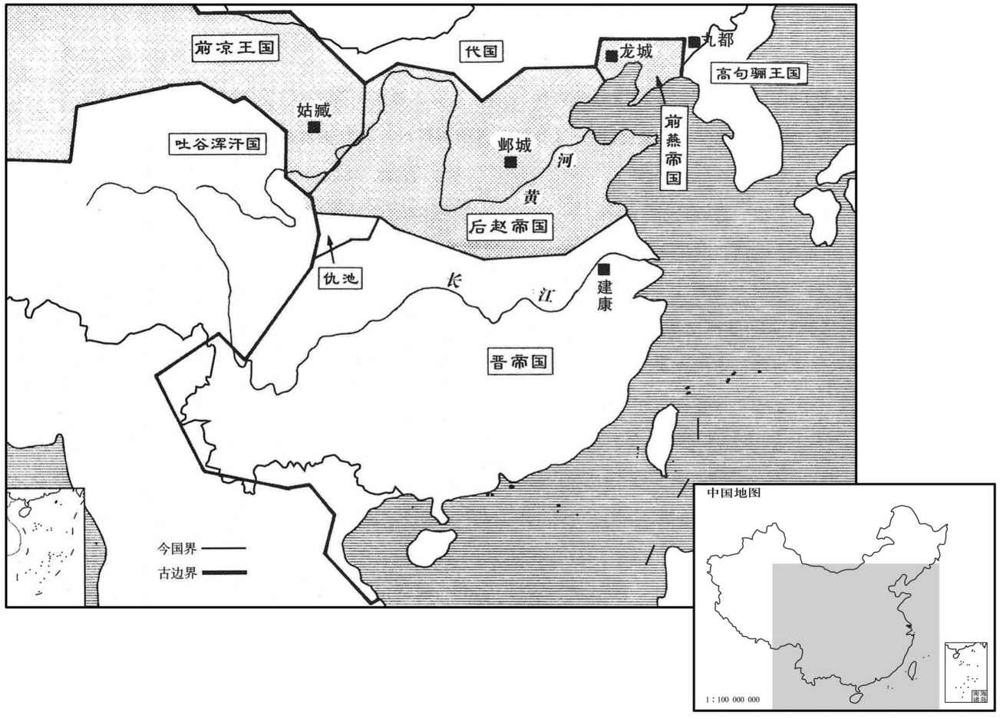
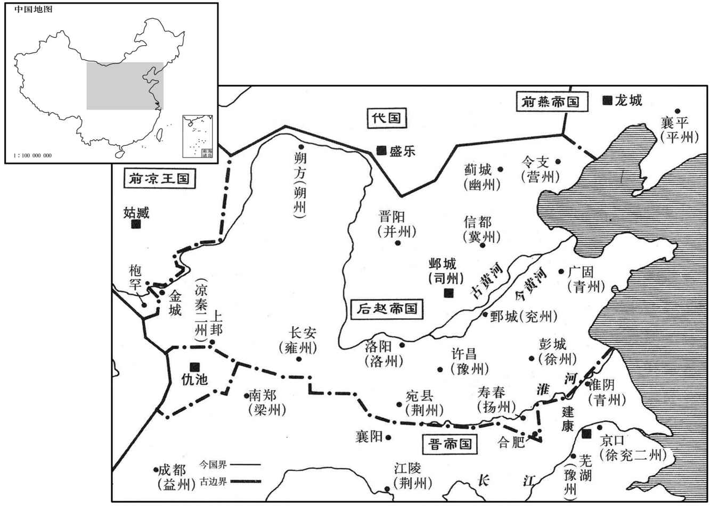

公元347年资治通鉴：本年记事、原文与白话对照
按原书编年位置阅读；追叙和史论不等于本年发生的事件。白话采用所据译本，缺译不以生成译文补齐。
卷97 · 本年记事
公元347年 · 晋孝宗穆皇帝永和三年
三年〔（丁未、三四七）〕
上传原文的注释括号有异常，字符原样保留；无法可靠划分的段落默认全文显示。
本年事件索引（现代整理）

本年形势与背景参考图

本年形势与背景参考图
春，二月，桓温军至青衣。〔青衣县，汉属蜀郡；后汉顺帝阳嘉二年，更名汉嘉；蜀立为汉嘉郡。刘昫曰：眉州青神县临青衣江，西魏置青衣县。青衣水出卢山徼外，东北流至武阳而合于江。杜佑曰：嘉州故夜郎国，汉武开置犍为郡，治龙游县，汉之青衣道也，在大江、青衣二水之会。〕汉主势大发兵，遣叔父右卫将军福、从兄镇南将军权、前将军昝坚等将之，自山阳趣合水。〔山阳之地，盖在岷江之北，峨眉山之阳。水经注：江水东南过犍为武阳县，青衣水、沫水从西南来合注之。所谓合水，当是此地。从，才用翻。昝，子感翻。将，即亮翻。趣，七喻翻。〕诸将欲设伏于江南以待晋兵，昝坚不从，引兵自江北鸳鸯碕渡向犍为。〔碕，渠宜翻，曲岸也。犍为，唐嘉州犍为县即其地，在州东南。〕
春季，二月，桓温的部队抵达青衣。成汉国主李势大举出兵，派叔父右卫将军李福、堂兄镇南将军李权、前将军昝坚等人率领兵众，从山阳开赴合水。众将领想要在长江以南设下埋伏以等待东晋的军队，昝坚没有听从，带领军队从长江以北的鸳鸯渡过长江，奔赴犍为。
三月，温至彭模；〔彭模，即汉犍为郡武阳县之彭亡聚也，岑彭死处。水经注：江水自武阳东至彭亡聚，谓之平模水，亦曰外水。平模去成都二百里，在今眉州彭山县。〕议者欲分为两军，异道俱进，以分汉兵之势。袁乔曰：「今军深入万里之外，胜则大功可立，不胜则类无遗，〔，才肖翻。〕当合势齐力，以取一战之捷。若分两军，则众心不一，万一偏败，〔偏败，谓两道并进，或一军为蜀所败。〕大事去矣。不如全军而进，弃去釜甑，赍三日粮，以示无还心，胜可必也。」温从之。留参军孙盛、周楚将羸兵守辎重，〔将，即亮翻；下同。重，直用翻。〕温自将步卒直指成都。楚，抚之子也。
三月，桓温抵达彭模。有人提议应该兵分两路，分头并进，用以削弱成汉军的威势。袁乔说：“如今孤军深入万里之外，胜利可以建立大功，败则尽死无遗，应当聚合威势，齐心协力，以争取一战成功。如果兵分两路，则众心不一，万一一方失败，讨伐蜀汉的大事就完了。不如以完整的军队前进，扔掉釜甑一类的炊具，只带三天的军粮，以显示义无返顾的决心，肯定可以取胜。”桓温听从了他的意见。留下参军孙盛，周楚带领瘦弱的士兵守卫轻重装备，桓温亲自统率步兵直接开赴成都。周楚是周抚的儿子。
李福进攻彭模，孙盛等奋击，走之。温进，遇李权，三战三捷，汉兵散走归成都，镇军〔【章：十二行本「军」作「东」；乙十一行本同；孔本同。】〕将军李位都迎诣温降。〔降，户江翻；下同。〕昝坚至犍为，〔犍，居言翻。〕乃知与温异道，还，自沙头津济，比至，〔比，必寐翻。〕温已军于成都之十里陌，坚众自溃。
李福进军攻打彭模，孙盛等人奋力反击，赶跑了他。桓温进军，遇上了李权，三次交战，三次获胜，成汉的军队溃散逃回了成都，镇军将军李位都迎到桓温那里投降。昝坚到了犍为以后，才知道和桓温走的不是一条路，掉头返回，从沙头津渡过长江，等到抵达成都，桓温已经驻扎在成都的十里陌，昝坚的兵众自己就溃散了。
势悉众出战于成都之笮桥，〔水经注：万里桥西，上曰夷桥，亦曰笮桥。笮，疾各翻。〕温前锋不利，参军龚护战死，矢及温马首。众惧，欲退，而鼓吏误鸣进鼓；〔雷鼓以进众曰进鼓。〕袁乔拔剑督士卒力战，遂大破之。温乘胜长驱至成都，纵火烧其城门。汉人惶惧，无复鬬志。〔复，扶又翻。〕势夜开东门走，至葭萌，〔葭，音家。〕使散骑常侍王幼送降文于温，〔散，悉亶翻。骑，奇寄翻。〕自称「略阳李势叩头死罪，」〔李氏，其先自巴西迁略阳。〕寻舆榇面缚诣军门。温解缚焚榇，送势及宗室十余人于建康；〔榇，初觐翻。〕引汉司空谯献之等以为参佐，举贤旌善，独人悦之。
李势把全部兵众都调往成都的笮桥迎战，桓温的前锋部队出师不利，参军龚护战死，流箭射中了桓温的马头。兵众见状十分害怕，想要撤退，而负责击鼓的官吏却误击了前进的鼓声。袁乔拔出战剑督促士兵奋力攻战，终于大败李势的军队。桓温乘胜长驱直入抵达成都，放火焚烧了城门。成汉人惊慌恐惧，再没有继续抵抗的斗志了。李势趁夜打开东门逃跑，到了葭萌，让散骑常侍王幼给桓温送去了请求投降的文书，自称“略阳人李势叩头请求死罪。”不久便拉着棺材，双手反绑于身后来到了桓温的军营门前投降。桓温为他松开了双手，焚烧了棺材，把李势及宗室亲属十多人送到了建康。任用汉司空谯献之等作为参佐，举拔贤能奖掖善事，蜀人十分高兴。
日南太守夏侯览贪纵，侵刻胡商，又科调船材，〔夏，户雅翻。调，徒吊翻。〕云欲有所讨，由是诸国恚愤。〔恚，于避翻。〕林邑王文攻陷日南，将士死者五六千，〔将，即亮翻。〕杀览，以尸祭天；檄交州刺史朱蕃，请以郡北横山为界。〔今邕州南界有横山，其山横截江河，我朝置横山寨及买马场。按刘昫旧唐志，汉武帝开百越，于交址郡南三千里置日南郡，治于朱吾。林邑，即汉日南郡之象林县，在郡南界四百里。后汉时中原丧乱，象林县人区连，杀县令，自称林邑王，遂为林邑国。邕州渡海乃玉至交趾，交趾三千里乃至日南。此横山自在日南郡北界，非今邕州之横山。〕文既去，蕃使督护刘雄戍日南。
日南太守夏侯览贪婪放纵，侵吞掠夺胡族商人，又下令征调造船用的木材，说准备讨伐征战使用，因此各国对他十分愤恨。林邑王范文攻陷了日南，日南的将士有五六千人死亡，杀掉了夏侯览，用他的尸体祭祀上天。给交州刺史朱蕃送去檄文，请求以郡北的横山作为与晋的分界。范文离开以后，朱蕃让督护刘雄戍守日南。
汉故尚书仆射王誓、镇东将军邓定、平南将军王润、将军隗文等皆举兵反，〔隗，五猥翻。〕众各万余。桓温自击定，使袁乔击文，皆破之。温命益州刺史周抚镇彭模，斩王誓、王润。温留成三十日，振旅还江陵。〔传曰：入而振旅。杜预注：振，整也；旅，众也。〕李势至建康，封归义侯。夏，四月，丁巳，邓定、隗文等入据成都，征虏将军杨谦弃涪城，退保德阳。〔涪，音浮。〕
成汉过去的尚书仆射王誓、镇东将军邓定、平南将军王润、将军隗文等人全都起兵反叛，各自拥有兵众数万。桓温亲自攻打邓定，让袁乔攻打隗文，全都大败了他们。桓温命令益州刺史周抚镇守彭模，斩杀了王誓、王润。桓温在成都逗留了三十天，整顿部队后返回了江陵。李势抵达建康，被封为归义侯。夏季，四月，丁巳（二十九日），邓定、隗文等人进占成都，征虏将军杨谦放弃了涪城，退守德阳。
赵凉州刺史麻秋攻枹罕。晋昌太守郎坦以城大难守，〔惠帝分敦煌、酒泉为晋昌郡。枹罕县，前汉属金城郡，后汉属陇西郡，张轨分属晋兴郡。水经注：晋昌川在湟中浩亹县西南。刘昫曰：晋昌郡，汉安县地；唐为晋昌县，瓜州治所。枹，音肤。〕欲弃外城。武成太守张悛曰：〔武成郡，亦张氏置。悛，丑缘翻，又七伦翻。〕「弃外城则动众心，大事去矣。」宁戎校尉张璩从悛言，固守大城。〔宁戎校尉，亦张氏所置。郎坦、张悛盖以各郡太守从张璩守枹罕。璩，求于翻。〕秋帅众八万围堑数重，〔帅，读曰率；下同。重，直龙翻。堑，七艳翻。〕云梯地突，百道皆进；〔地突者，为地道突出于城中。〕城中御之，秋众死伤数万。赵王虎复遣其将刘浑等帅步骑二万会之。〔复，扶又翻。将，即亮翻；下除将军外并同。〕郎坦恨言不用，教军士李嘉潜引赵兵千余人登城；璩督诸将力战，杀二百余人，赵兵乃退。璩烧其攻具，秋退保大夏。〔夏，户雅翻。〕
后赵凉州刺史麻秋攻打罕。晋昌太守郎坦因为罕城大难以防守，想放弃外城。武成太守张悛说：“放弃了外城就会动摇众心，大事也就完了。”宁戎校尉张琚听从了张悛的话，固守城池。麻秋率领八万兵众将护城河团团包围，云梯地道，各路俱进，城中的士兵顽强抵抗，麻秋的兵众死伤数万。后赵王石虎又派他的将领刘浑等人率领步、骑兵二万人与麻秋会合。郎坦痛恨张悛不采纳自己的意见，叫军士李嘉悄悄地带领一千多赵士兵登上城墙。张琚督促众将领奋力战斗，杀死了二百多人，后赵军队这才后退。张琚焚烧了后赵军队进攻的器械，麻秋退守大夏。
虎以中书监石宁为征西将军，帅并、司州兵二万余人为秋等后继。张重华将宋秦等帅户二万降于赵。〔降，户江翻。〕重华以谢艾为使持节、军师将军，〔使，疏吏翻。〕帅步骑三万进军临河。艾乘轺车，戴白幍，〔轺，音遥。幍，古洽翻。〕鸣鼓而行。秋望见，怒曰：「艾年少书生，冠服如此，轻我也，」命黑抬龙骧三千人驰击之；〔抬，音朔。骧，思将翻。〕艾左右大扰。或劝艾宜乘马，艾不从，下车，踞胡床，〔胡床盖今交椅之类。〕孔颖达曰：今之交床，制本自虏来，隋以谶有胡，改名交床。〕指麾处分，〔处，昌吕翻。分，扶问翻。〕赵人以为有伏兵，惧不敢进。别将张瑁自间道引兵截赵军后，〔瑁，莫报翻。间，古苋翻。〕赵军退，艾乘势进击，大破之，斩其将杜勋、汲鱼，获首虏万三千级，秋单马奔大夏。
石虎任命中书监石宁为征西将军，率领并州、司州的军队二万多人作为麻秋的后继部队。张重华的部将宋秦等人率领二万多户人家向后赵投降。张重华任命谢艾为使持节、军师将军，率领步、骑兵三万人进军临河。谢艾乘着轻车，戴着白色便帽，击鼓前进。麻秋远远望见，愤怒地说：“谢艾是年轻书生，如此穿着，这是轻视我。”于是就命令装备黑色矛的三千龙骧兵驰马攻打他，跟随在谢艾周围的人大为惊忧。有人劝谢艾应该骑马，谢艾不听，下车以后，坐在交椅上，指挥部署，后赵军以为有伏兵，因害怕不敢再前进了。别将张瑁率兵从小路截断了后赵军队的后路，后赵军队兵退，谢艾乘势进攻，大破后赵军，斩杀了后赵将领杜勋、汲鱼，斩杀其兵众一万三千多人，麻秋单身匹马逃奔大夏。
五月，秋与石宁复帅众十二万进屯河南，〔复，扶又翻。〕刘宁、王擢略地晋兴、广武、武街，〔张轨分西平界置晋兴郡。〕至于曲柳。〔曲柳，地名，在洪池岭北。〕张重华使将军牛旋拒之，退守枹罕，姑臧大震。重华欲亲出拒之，谢艾固谏。索〔【章：十二行本「索」上有「别驾从事」四事；乙十一行本同；孔本同；张校同；退斋校同。】〕遐曰：〔索，昔各翻。〕「君者，一国之镇，不可轻动。」乃以艾为使持节、都督征讨诸军事、行卫将军，遐为军正将军，〔古有军正。黄帝法曰，正无属将军，将军有罪以闻。盖军中执法者也。张氏遂以为将军之号。〕帅步骑二万拒之。别将杨康败刘宁于沙阜，〔败，补迈翻。〕宁退屯金城。
五月，麻秋和石宁又率领十二万兵众进军驻扎在黄河以南，刘宁、王擢攻略晋兴、广武、武街，直至曲柳。张重华让将军牛旋抵抗他们，后退固守罕，姑臧城内大为震恐。张重华想亲自出征抵抗，谢艾退切劝谏。索遐说：“君王镇摄一国，不可轻率行动。”张重华于是任命谢艾为使持节，都督征讨诸军事、行卫将军职，任命索遐为军正将军，率领二万步、骑兵抵抗赵军。别将杨康在沙阜打败刘宁，刘宁后退驻扎在金城。
六月，辛酉，大赦。
六月，辛酉（初五），晋实行大赦。
秋，七月，林邑复陷日南，〔复，扶又翻；下同。〕杀督护刘雄。
秋季，七月，林邑的军队又攻陷日南，杀掉了督护刘雄。
隗文、邓定等立故国师范长生之子贲为帝而奉生，〔李雄以范长生为国师。〕以妖异惑众，蜀人多归之。〔妖，于骄翻。〕
隗文、邓定等人立前国师范长生的儿子范贲为帝，并尊奉他，他们靠妖异之辞迷惑民众，蜀人大多归附。
赵王虎复遣征西将军孙伏都、将军刘浑帅步骑二万会麻秋军，长驱济河，击张重华遂城、长最。〔长最，地名，在金城河北。考异曰：晋春秋作「上最」。今从重华传。〕谢艾建牙誓众，有风吹旗东南指，索遐曰：「风为号令，今旌旗指敌，天所赞也。」〔风云气候杂占曰：风不旁教，旌旗晕晕随风而扬举，或向敌，终日军行有功，胜候也。〕艾军于神鸟，王擢与艾前锋战，败，走还河南。八月，戊午，艾进击秋，大破之，秋遁归金城。虎闻之，叹曰：「吾以偏师定九州岛，今以九州岛之力困于枹罕，彼有人焉，未可图也！」艾还，讨叛虏斯骨真等万余落，皆破平之。
后赵王石虎又派征西将军孙伏都、将军刘浑率领步、骑兵二万人与麻秋的军队会合，长驱直入，渡过黄河，攻打张重华，屯军长最。谢艾在军前竖起大旗与兵众誓师，恰好风吹旌旗指向东南，索遐说：“风向就是号令，现在旌旗指向敌人，这是上天的助。”谢艾屯军于神鸟，王擢与谢艾的前锋部队交战，被打败，逃回黄河以南。八月，戊午（初三），谢艾进军攻打麻秋，大败麻秋，麻秋逃回金城。石虎听说以后，叹息道：“我靠部分军队平定了九州，如今拥有九州的兵力却受困于罕，他们有人才在这里，不可图谋！”谢艾班师返回，讨伐反叛敌虏的斯骨真等一万多个部落，全都打败平定了他们。
赵王虎据十州之地，〔幽、并、冀、司、豫、兖、青、徐、雍、秦十州。〕聚敛金帛，〔敛，力赡翻。〕及外国所献珍异，府库财物，不可胜纪；〔胜，音升。〕犹自以为不足，悉发前代陵墓，取其金宝。
后赵王石虎占据了十州的地域，聚集收敛金帛，以及外国所进献的珍异宝物，府库里的财物，不可胜数，但自己还是觉得不够，把前代的陵墓全都挖掘开，夺走了其中的金宝。
沙门吴进言于虎曰：〔袁宏汉记曰：沙门，汉言息也，盖息欲以归于无为也。〕「胡运将衰，晋当复兴，宜苦役晋人以厌其气。」〔厌，一叶翻，厌胜也。〕虎使尚书张群发近郡男女十六万人，车十万乘，运土筑华林苑及长墙于邺北，广袤数十里。〔乘，绳证翻。华，如字。袤，音茂。〕申锺、石璞、赵揽等上疏陈天文错乱，百姓雕弊。虎大怒曰：「使苑墙朝成，吾夕没，无恨矣。」促张群使然烛夜作；暴风大雨，死者数万人。郡国前后送苍麟十六，白鹿七，虎命司虞张曷柱调之以驾芝盖，〔晋职官志，太仆之属有典虞都尉，赵之司虞，即是官也。张曷柱，人姓名。芝盖者，盖为瑞芝之形。〕大朝会列于殿庭。〔朝，直遥翻。〕
僧人吴进向石虎进言说：“胡族的命运将要衰落，晋王朝当要复兴，应当让晋人服艰苦的劳役，以抑制他们的气势。”石虎让尚书张群征发附近各郡的男女十六万人，车十万辆，运土到邺城以北，修筑华林苑及漫长的围墙，占地方圆数十里。申钟、石璞、赵揽等人上疏，陈述目前天文星象错乱，百姓凋敝。石虎勃然大怒，说：“即使宫苑和围墙早晨建成，而我晚上就死去，也死无遗憾。”石虎督促张群让人们占燃烛火，夜不停工。天降暴风大雨，死亡的人达数万。各郡国先后送上苍麟十六只，白鹿七头，石虎命令司虞张曷柱调驯它们，用来驾芝盖车，举行盛大朝会时陈列在殿堂庭院。
九月，命太子宣出祈福于山川，因行游猎。宣乘大辂，羽葆华盖，建天子旌旗，十有六军戎卒十八万出自金明门，〔水经注，邺城有七门：南曰凤阳门，中曰中阳门，次曰广阳门，东曰建春门，北曰广德门，次曰厩门，西曰西明门，盖即金明门也。〕虎从其后宫升陵霄观望之，〔观，古玩翻。〕笑曰：「我家父子如此，自非天崩地陷，当复何愁！但抱子弄孙，日为乐耳。」〔复，扶又翻。乐，音洛。〕
九月，石虎命令太子石宣到各地的山川祈求福祉，顺便周游打猎。石宣乘坐大车，车子饰以鸟羽华盖，树立天子旌旗，十六路军队的十八万士卒从金明门出发，石虎从后宫登上陵霄观眺望，笑着说：“我家父子如此，除非天崩地陷，还有什么可愁的呢！我只管去抱儿子逗孙子，终日享受天伦之乐吧。”
宣所舍，辄列人为长围，田面各百里，驱禽兽，至暮皆集其所，使文武皆跪立，重行围守，〔重，直龙翻。行，户刚翻。〕炬火如昼，命劲骑百余驰射其中，宣与姬妾乘辇临观，兽尽而止。或兽有迸逸，〔迸，北孟翻。〕当围守者，有爵则夺马，步驱一日，无爵则鞭之一百。士卒饥冻死者万有余人，所过三州、十五郡，资储皆无孑遗。〔以下韬所出征之，宣所过三州，盖司、兖、豫也。〕
石宣每到一地停留，就让人们结成漫长的围圈，四边各有一百多里，然后驱赶禽兽，到傍晚让禽兽全都汇集在他的住所附近，让文武官员全都跪立，再把禽兽围拢起来，火炬把四周照得如同白昼，石宣命令强劲骑兵一百多人驰马向围圈中射击，石宣和姬妾们乘车观看，直到禽兽全被射死才停止。有时个别禽兽逃出围圈，负责围守该地段的人，有爵位的就剥夺他的马让他步行一天，没爵位的就责罚一百鞭。士卒饥寒交迫，死亡的人有一万多，所经过的三州十五郡，物资储备全都挥霍无遗。
虎复命〔【章：十二行本「命」下有「秦公」二字；乙十一行本同；孔本同；退斋校同。】〕韬继出，自并州至于秦、雍亦如之。〔复，扶又翻。雍，于用翻。〕宣怒其与己钧敌，愈嫉之。宦者赵生得幸于宣，无宠于韬，微劝宣除之，于是始有杀韬之谋矣。
石虎又命令石韬继石宣之后出行，从并州到秦州、雍州，情况和石宣一样。石宣对石韬和自己势均力敌很恼怒，对他越发嫉恨。宦官赵生得宠于石宣，在石韬面前不受宠爱，于是就暗地里劝说石宣除掉石韬，从此开始有了杀石韬的图谋。
赵麻秋又袭张重华将张瑁，败之，〔据载记，瑁时屯河陕。败，补迈翻。〕斩首三千余级。枹罕护军李逵帅众七千降于赵，自河以南，氐、羌皆附于赵。〔赵强凉弱，凉战虽数胜，人心随强弱而为向背，况复有张瑁之败乎！帅，读曰率。降，户江翻。〕
后赵的麻秋又攻袭张重华的部将张瑁，打败了他，斩首三千多级。罕护军李逵率领七千兵众投降了后赵，自黄河以南，氐族、羌族全都归附了后赵。
冬，十月，乙丑，遣侍御史俞归至凉州，授张重华侍中、大都督、督陇右‧关中诸军事、大将军、凉州刺史、西平公。归至姑臧，重华欲称凉王，未肯受诏，使所亲沈猛私谓归曰：「主公奕世为晋忠臣，〔奕世，累叶也。〕今曾不如鲜卑，何也﹖朝廷封慕容皝为燕王，而主公纔为大将军，何以褒劝忠贤乎！明台宜移河右，共劝州主为凉王。〔归为侍御史，以将命故，谓之明台。移，谓移文。〕人臣出使，苟利社稷，专之可也。」〔使，疏吏翻。〕归曰：「吾子失言！〔古者，列国之大夫率相谓曰吾子。仪礼注曰：子者，男子之美称。言吾子，相亲之辞。〕昔三代之王也，爵之贵者莫若上公；〔三代封建，列爵五等，曰公、侯、伯、子、男；上公九命作伯。〕及周之衰，吴始僭号称王，而诸侯不之非，盖以蛮夷畜之也；借使齐、鲁称王，诸侯岂不四面攻之乎！汉高祖封韩、彭为王，寻皆诛灭，盖权时之宜，非厚之也。圣上以贵公忠贤，故爵以上公，任以方伯，宠荣极矣，岂鲜卑夷狄所可比哉！且吾闻之，功有大小，赏有重轻。今贵公始继世而为王，〔言重华始继父位，未有功于晋而求为王也。〕若帅河右之众，〔帅，读曰率。〕东平胡、羯，修复陵庙，迎天子返洛阳，将何以加之乎﹖」重华乃止。
冬季，十月，乙丑（十一日），晋派侍御史俞归到凉州，授予张重华侍中、大都督、督陇右、关中诸军事、大将军、凉州刺史、西平公。俞归抵达姑臧，张重华想称凉王，不肯接受诏命，让亲信沈猛私下里对俞归说：“主公世代都是晋王室的忠臣，如今却竟然不如鲜卑，为什么？朝廷封慕容为燕王，而主公仅仅才是大将军，靠什么褒奖勉励忠臣贤良呢！您应该向黄河以西的民众发布文告，共同劝州主作凉王。臣下出使于外，如果是对国家有利的事情，擅自决定也是可以的。”俞归说：“阁下说错了！过去三代称王的时候，尊贵的爵位没有什么能比得上上公；等到周室衰微，吴国、楚国开始僭越封号称为王，而其他诸侯国不加非难，是因为把他们作为蛮夷来对待，假使齐国、鲁国称王，其他诸侯国岂不四面攻击他们吗！汉高祖封韩信、彭越为王，不久把他们全都诛灭，这是一时的权宜之计，不是厚待他们。圣主因为主公忠诚贤明，所以赐爵上公，授以一方重任，恩宠荣耀登峰造极，难道是鲜卑夷狄所能比拟的吗？况且我听说，功有大小，赏有重轻。如今主公刚刚继位就称王，如果率领黄河以西的民众，东进平定胡人、羯人，修复陵庙，迎接天子返回洛阳，将会被加授什么职位呢？”张重华于是放弃了称凉王的打算。
武都氐王杨初遣使来称藩，诏以初为使持节、征南将军、雍州刺史、仇池公。〔使，疏吏翻。雍，于用翻。〕
武都氐王杨初派使者前来向晋称藩，朝廷下诏，任命杨初为使持节、征南将军、雍州刺史、仇池公。
十二月，振威护军萧敬文杀征虏将军杨谦，攻涪城，陷之，自称益州牧；遂取巴西，通于汉中。〔振威护军，晋官也。萧敬文以晋新并蜀，又有范贲之乱，故亦乘之而反。涪，音浮。〕
十二月，振威护军萧敬文杀掉了征虏将军杨谦，攻打涪城，攻了下来，自称益州牧。占据了巴西，直达汉中。